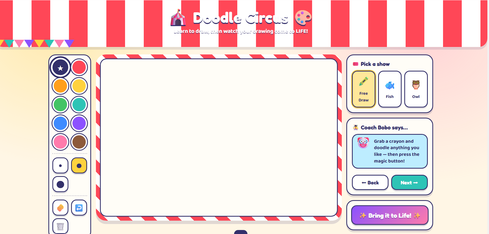

01 · PRODUCT DESIGN · CHILD-FRIENDLY CANVAS
Doodle Circus: designing a guided drawing flow for kids
A playful browser drawing app that balances step-by-step lessons, open-ended creativity, and a toolset young users can understand without instruction.
UI/UXresponsive designCanvas APImicro-interactions
- USER GOAL
- Start drawing quickly, follow a lesson when needed, and see the finished sketch come alive.
- FLOW
- Choose guided or free draw, use a focused toolset, complete the drawing, then trigger animation feedback.
- CONSTRAINT
- Many drawing controls had to remain readable and reachable on smaller screens.
- DECISION
- Reshape the tool rail into a compact two-column system instead of forcing horizontal scrolling.
ITERATION EVIDENCE
The first responsive layout overflowed the viewport. I used AI-assisted debugging to locate the layout conflict, then revised and tested the control grouping across smaller breakpoints.